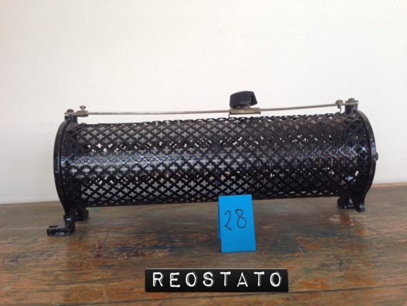

Reostato a cursore
Scuola di provenienza: Liceo Statale "P. E. Imbriani", Avellino
Settore: Elettrologia
Costruttori: Sconosciuto
Materiali: Ghisa
Accessori: Nessuno
Stato di conservazione: Un piedino è rotto ed è stato ricostruito. La resistenza interna non c’è più.
Descrizione: È costituito da un filo conduttore avvolto su un cilindro di materiale isolante; un contatto mobile strisciante, detto cursore, può essere spostato parallelamente all'asse del cilindro. Il reostato viene impiegato come resistenza variabile, dal momento che la resistenza del filo tra un capo dell’avvolgimento e il contatto mobile è proporzionale alla sua lunghezza. Attraverso la taratura dello strumento è quindi possibile valutare la resistenza utilizzata in base alla posizione del cursore. Le caratteristiche di un reostato sono la sua resistenza massima, ottenuta quando il cursore è a fondo corsa, e l’intensità della corrente che può sopportare, dovuta alla sezione e al materiale del filo conduttore.